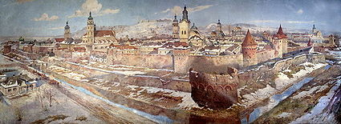
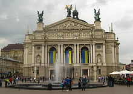

Місто Лева
Львів — місто обласного підпорядкування в Україні, адміністративний центр Львівської області, національно-культурний та освітньо-науковий осередок країни, великий промисловий центр і транспортний вузол.
Історія
 Археологічні розкопки свідчать, що район Львова був заселений ще у V столітті. Львів був заснований князем Данилом Галицьким, як удільне місто для його сина Льва. Перша письмова згадка про Львів, датована 1256 роком, міститься у Галицько-Волинському літописі і фігурує в контексті опису пожежі в столиці Галицько-Волинської держави — Холмі.
Після смерті Данила, князь Лев переніс до Львова столицю Галицько-Волинської держави. Згодом, у 1303 році, Львів став центром Галицької митрополії Константинопольського патріархату. Львів був важливим торгово-економічним і політичним центром Східної Європи. Давньоруський Львів складався з дитинця та укріпленої осади в районі сучасної площі Старий Ринок.
У 1340 році Львів був завойований Королівством Польським, проте місцеві бояри скинули нову владу і утворили незалежну республіку. У 1349 році Казимир III Великий повертає владу над Львовом. Казимир Великий поруч з давньоруською осадою заклав нові міські квартали, які стали зачатком сучасного Львова. Будівництво було доручене німецьким архітекторам, які збудували готичне місто-фортецю, обмежену сучасними вулицями Лесі Українки, Підвальною, Валовою та проспектом Свободи. Місто отримало статус столиці Руського королівства — автономної адміністративної одиниці Польщі. Місто мало пряме королівське управління, аж поки у 1356 році йому було дароване маґдебурзьке право. У 1378 році Львів разом зі всією Галичиною перейшов під владу Угорщини. Угорська зверхність тривала 9 років, після чого польські війська під керівництвом королеви Ядвіґи повернулися до міста, яке стало адміністративним центром Руського воєводства.
Освіта і наука
Станом на початок 2010 року у Львові діє 96 дошкільних навчальних закладів (дитячих садочків), проте їх явно мало — лише 59% дітей у місті мають доступ до дошкільної освіти. Батькам доводиться ставати в чергу, щоб записати дитину в дошкільний заклад, на 100 місць претендує 143 дитини. Це пов'язано з тим, що у кризові 1990-ті окремі дитячі групи і, навіть, цілі садочки закривалися, натомість приміщення продавалися чи передавалися в оренду, що призвело до значного скорочення вільних місць у дошкільних навчальних закладах. Попри те, що відкриваються нові групи (у 2009 році, приміром, було відкрито 11 груп), проблема стає дедалі актуальнішою, адже у Львові спостерігається збільшення рівня народжуваності. У місті діють 143 середні навчальні заклади (школи). Всі вони забезпечені комп'ютерними класами, у багатьох є мультимедійні проектори, деякі школи мають плавальні басейни. Діє також 24 середні спеціальні навчальні заклади (технікуми, коледжі, училища) та 30 вищих навчальних закладів.
Вища школа має у Львові давні традиції. Так, у місті засновано перший в Україні університет та перший у Східній Європі виш технічного спрямування. Львівський університет Франка та Університет «Львівська Політехніка» є одними з найкращих ВНЗ країни і періодично займають чільні місця в національних рейтингах. Такі вищі навчальні заклади, як Національний лісотехнічний університет, Українська академія друкарства, Національна академія мистецтв не мають аналогів в Україні. Серед інших львівських вишів, найвідомішими є Український католицький університет, Музична академія імені Лисенка, Національний медичний університет, Університет ветеринарної медицини.
Культура ЛьвоваКультура Львова
Культурна столиця України — почесне звання, надане 28 квітня 2009 року місту Львову Державною службою туризму і курортів України та Громадською радою з питань туризму і курортів Міністерства культури і туризму України.
Музика, театр і кіно
У 1795 році у Львові було відкрито перший в Україні професійний театр. У 1842 році відкрито Театр Скарбека, тоді — третій за розмірами у Європі; у 1900 році з'явилася Львівська опера — один з найгарніших театрів країни, зображений на двадцятигривневій купюрі. У місті діє 7 професійних театрів: опери та балету, український драматичний, Леся Курбаса, «Воскресіння», «І люди, і ляльки», муніципальний, для дітей та юнацтва і ляльковий, 6 театрів-студій та цирк. Місто є значним осередком театрального життя — щороку тут проходять два театральні фестивалі: «Золотий лев», найбільший театральний фестиваль країни, та «Драбина», фестиваль молодого аматорського театру. Щороку, в жовтні, у місті проходить театралізований карнавал. На великі свята відбуваються вуличні вистави на ходулях та вогняні шоу.
У Львові діє 7 кінотеатрів: «Планета кіно», «Кінопалац», «Копернік», «імені Довженка», «Львів», «Київ» та «Сокіл». Перші три з них входять до мережі «Кінопалац», три останні є власністю декржави і перебувають у жалюгідному стані через нестачу фінансування. З тих же причин, починаючи з 1990-х років, багато кінотеатрів було ліквідовано. Також у місті діє перший в Україні автомобільний кінотеатр «Кінопарк». Разом з цим, Львів часто стає знімальним майданчиком: місто «грає роль» європейських столиць, де вартість зйомок значно дорожча. Щороку у Львові проходять фестивалі «Wiz-Art» (фестиваль короткометражних фільмів) та «КіноЛев» (фестиваль «незалежного кіно»).
| Назва | Адреса | Сайт |
|---|---|---|
| Львівський державний академічний театр опери та балету | просп. Свободи, 28 | http://opera.lviv.ua/ |
| Театр імені Марії Заньковецької | вул. Лесі Українки, 1 | http://www.zankovetska.com.ua/ |
| Театр імені Леся Курбаса | вул. Леся Курбаса, 3 | http://www.kurbas.lviv.ua/academy |
| Муніципальний театр | вул. Городоцька, 36 | |
| Духовний театр «Воскресіння» | пл. Генерала Григоренка, 5 | |
| Львівський обласний театр ляльок | пл. Данила Галицького, 1 | |
| Перший український театр для дітей та юнацтва | вул. Гнатюка, 11 | http://nashteatr.lviv.ua/ |
| Театр естрадних мініатюр «І люди, і ляльки» | вул. Фредра, 6 |
Бібліотеки Львова
Серед відомих бібліотек Львова — Бібліотека Львівського університету, Міська центральна бібліотека імені Лесі Українки, Центральна міська дитяча бібліотека, Обласна бібліотека для дітей, Обласна бібліотека для юнацтва та інші.